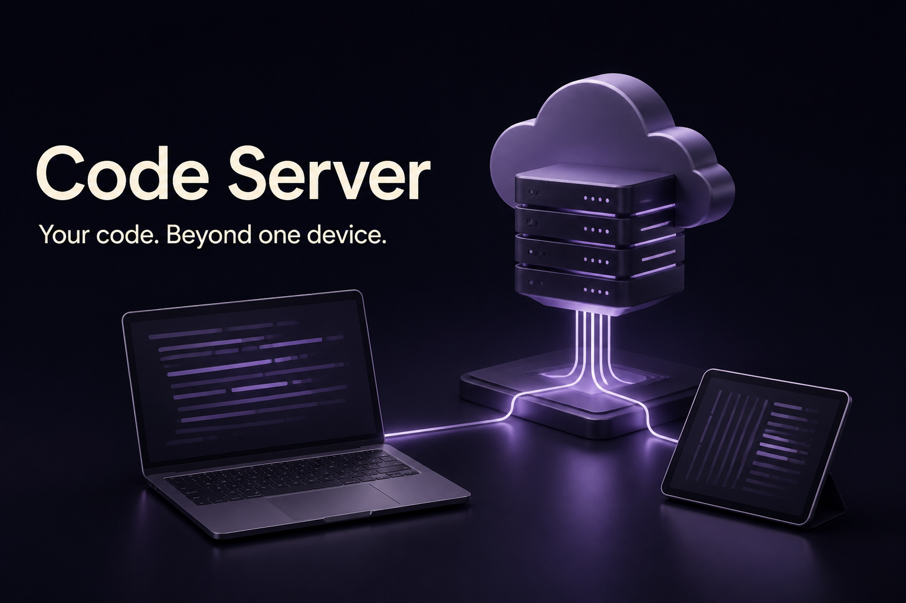
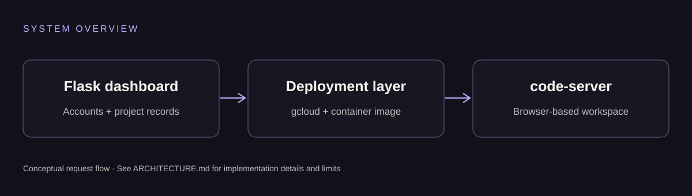

Project dashboard
Account-backed project records organize repository URLs and deployed service links.
Developer tooling · Flask · Cloud Run
A Flask project dashboard and containerized code-server prototype exploring browser-based development and GitHub repository deployment on Google Cloud Run.

What the code demonstrates
Account-backed project records organize repository URLs and deployed service links.
A Docker image packages code-server and a repository startup script.
The prototype demonstrates the handoff from a GitHub repository to a Cloud Run workspace.
Under the hood

Create a local account and open the Flask project dashboard.
A maintainer configures the image, cloud project and deployment credentials.
The container starts a browser-accessible code-server workspace.
From repository to local environment
Clone the repository, read the prerequisites, then run the project-specific checks. The command below is a starting point, not the complete installation.
git clone https://github.com/mayank-vekariya/my-ide-cloud.git cd my-ide-cloud python create_db.py
Scope and honesty
Know what you are running. This is a local/academic prototype. The existing deployment path requires security hardening before public use, including authenticated workspaces, safe command execution, authorization and CSRF protection. No cloud resources are created by this showcase.